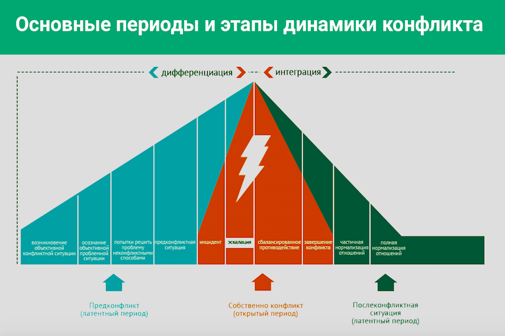

Динамика конфликта. Этапы развития конфликта и их особенности

Здравствуйте, с вами вновь Юлия Огаркова-Дубинская. Мы продолжаем разбирать тему конфликтов. На прошлых лекциях мы достаточно подробно разобрались с тем, из чего состоит проблемное поле конфликта, что такое структура конфликта, какие у конфликта есть участники, предмет и т.д. Сейчас самое время поговорить о том, как выглядит динамика конфликта: как конфликт зарождается, проявляется вовне, что такое эскалация конфликта, как конфликт развивается и как затухает.
Итак, давайте рассмотрим динамику конфликта на примере следующего графика. График многослойный, мы будем сейчас эту схему подробно рассматривать. График показывает интенсивность возрастания эмоций, напряжения во время конфликта от начала и до его завершения.

Условно график делится на две части.
Часть 1. Дифференциация: от начала конфликта до максимально пиковой точки эскалации конфликта. На этом этапе происходит размежевание участников: чем дальше конфликт, тем более далекими друг от друга становятся оппоненты.
Часть 2. Интеграция: от пика до завершения. На этом этапе постепенно происходит затухание конфликта. Два участника становятся способными общаться более конструктивно, смотреть друг на друга не как на врагов, что позволяет им сблизиться.
Этапы конфликта
Кроме того, мы можем выделить три этапа конфликта, каждый из которых состоит из нескольких подэтапов.
Этап 1. Предконфликтный период. Помните, мы раньше говорили о том, что такое предконфликт? Это ситуация, когда конфликт внешне происходит, но не сопровождается негативными чувствами, или (что бывает чаще) когда конфликт есть, но негативные чувства пока не выражаются вовне.
Этап 2. Открытый период. Это этап собственно конфликта, он на графике показан красным цветом и молнией.
Этап 3. Послеконфликтная ситуация. Это латентный период, когда конфликт затухает.
Давайте разберем их пошагово.
Этап 1. Предконфликтный или латентный период
Все начинается с возникновения проблемной ситуации. Часто этот подэтап путают с инцидентом, то есть началом реального конфликта. На самом деле это еще не инцидент, это только начало. Подэтап возникновения объективной проблемной ситуации лежит в области бессознательного. Люди пока не осознали, что ситуация проблемная.
Затем наступает следующий подэтап латентного периода, который называется «осознание объективной проблемной ситуации». В этот момент мы сознательно понимаем, что есть что-то, что нас не устраивает. Есть некий конфликт интересов.
Следующий подэтап — это попытки решить проблему неконфликтными способами. Как правило, это попытки договориться, обозначить оппоненту свой дискомфорт, то есть взаимодействовать мирными способами. Это, напоминаю, уже часть конфликта, поскольку есть проблемная ситуация, но это пока еще латентный период, открытого конфликта нет. Иногда бывает так, что на этом этапе ситуация разрешается, и тогда конфликт в открытую фазу не перерастает. Тогда у нас просто ситуация, когда один человек обозначил другому, что ему дискомфортно, другой принял это во внимание и проблема разрешилась. Но если на этом этапе кто-то из оппонентов не пошел навстречу другому, складывается предконфликтная ситуация. Между двумя участниками нарастает напряжение, которое становится благоприятной почвой, чтобы любой повод поспособствовал развитию конфликта.
Приведу пример из семейной сферы. Давайте возьмем анекдотическую ситуацию, чтобы было понятно. Предположим, жене не нравится, что муж разбрасывает везде свои вещи, например, носки. Осознание объективной ситуации для нее возникает тогда, когда она только что сделала уборку, муж пришел домой после работы и через 10 минут дом опять стал таким, как будто она ничего не убирала. Для нее это объективная проблемная ситуация, она понимает, что это повторяется регулярно, и чувствует себя не очень комфортно.
Наступает следующий этап: она подходит к мужу и пытается разрешить эту проблему неконфликтным способом. Как разрешить? Поговорить (в норме неконфликтный способ — это поговорить): «Ты знаешь, я чувствую себя дискомфортно, когда ты вот так себя ведешь, давай попробуем по-другому». Мы пока говорим о предконфликте. Ситуация, когда она начнет на него кричать и обзывать — это уже открытый конфликт. Мы к этому еще придем.
Муж отвечает: «Да, я тебя понимаю», но на следующий день все повторяется. И это уже предконфликтная ситуация. Жена поняла, что ее попытка разрешить ситуацию мирным путем не увенчалась успехом. Ничего не вышло и напряжение осталось. Напряжение — это неразрешенная ситуация, фрустрированная потребность. С другой стороны, напряжение осталось и у мужа, который в этой ситуации может и осознавать, что не хотел бы мусорить, но делает это автоматически. Он привык так в течение своей жизни. У него появляется чувство вины, неловкости, он понимает, что не может быстро это все отрегулировать. Мы видим, что напряжение возникает с обеих сторон.
Этап 2. Конфликтный или открытый период
В этой напряженной ситуации поводом для открытого конфликта может послужить всё что угодно. Например, муж в очередной раз не услышал, что жена зовёт его обедать. И это послужило для жены поводом, чтобы высказать ему в жесткой форме и то, что он не услышал ее сейчас, и то, что не услышал с разбросанной одеждой, и то, что он вообще ее не слышит. Такой повод для конфликта — это инцидент. Так это называется в конфликтологии.
Этап открытого конфликта начинается с инцидента. Мы знаем много ситуаций в мировой политике, когда какой-то инцидент был поводом для перехода к открытой стадии конфликта. Мы помним, например, что Первая мировая война формально возникла в результате некоего инцидента, связанного с убийством герцога, но на самом деле напряжение в мире существовало и до этого. Инцидент иногда может быть пустяковым, и в другой ситуации он не привел бы к развитию конфликта. Но увы, если есть предконфликтная ситуация, инцидент сработает.
Когда возникает инцидент, оппоненты открыто выражают друг другу свою позицию. В ситуации с разбросанными вещами жена высказывает все свои претензии мужу. Иногда так случается, что на этом этапе конфликт останавливается, но чаще происходит по-другому. Муж, у которого своя информационная картина ситуации, понимает, что делает все возможное, но не может переключиться сразу и полностью, ему нужно время для таких изменений, а жена не ценит его усилий.
Как правило, дальше следует эскалация или усиление конфликта. Поле конфликта разрастается. В этот момент жена может говорить мужу: «Ты меня не услышал сейчас, когда я тебя позвала на обед, ты меня не услышал в ситуации с вещами, и ты вообще меня никогда не слышишь. И даже когда мы с тобой встречались еще до свадьбы, я помню, был момент, когда я тебя попросила о чем-то, а ты меня не услышал». В ход идут ситуации, которые уже не имеют отношения к реальному конфликту. Но поскольку на этапе эскалации поле конфликта расширяется, то участники подтягивают всё связанное или несвязанное с конфликтом в течение всей своей жизни, драматизируют ситуацию и, таким образом, как будто усиливают свою аргументацию, собственную правоту и вину оппонента. И это нормально.
Как правило, то, что люди говорят в период эскалации конфликта, не всегда является правдой в полном смысле этого слова. Но это может быть полезным, потому что позволит выявить болевые точки партнера или собеседника, о которых он, возможно, не рискнул сказать раньше — для этого не было достаточной заряженности конфликта. А теперь ему хватило ресурса это высказать.
Иногда бывают ситуации, о которых партнер раньше даже не задумывался, но сейчас вдруг они оказались важными. Таким образом, на этапе открытого конфликта важно очень хорошо слушать, что говорит собеседник. Тогда вы поймете, какие ситуации доставляют боль вашему партнеру, коллеге, собеседнику — о чем на самом деле стоит поговорить, когда конфликт завершится.
Эскалация может длиться долго, ее эпизодов бывает много, но в какой-то момент кто-то из конфликтующих устает, ресурсно истощается, его эмоции снижаются по амплитуде и их место занимают когнитивные (умственные) способности. И в какой-то момент он говорит дельную фразу. Как правило, с этого момента начинается так называемое сбалансированное противодействие. Это еще пока открытая фаза конфликта: все напряжены, эмоции накалены, конфликт не исчерпан. Но, обратите внимание, мы перешли через пик: перешли из стадии дифференциации, когда мы отдаляемся друг от друга, к стадии интеграции, когда мы вдруг повернулись друг к другу и начали сближаться.
На подэтапе сбалансированного противодействия люди, как правило, продолжают противодействовать, отстаивать свои интересы, но делают это уже не так эмоционально, а более аргументированно, с применением своих когнитивных способностей. Конфликт начинает затухать достаточно быстро, и мы переходим в следующий подэтап — завершение конфликта. Участникам удается высказать друг другу все претензии, они чувствуют себя выслушанными (если никто не убежал из конфликтного поля, и конфликт все-таки состоялся), они договариваются о том, что для них больно, неприемлемо, дискомфортно, как быть в ситуации, когда нельзя полностью удовлетворить желания обоих, придумывают какое-то общее решение. Как правило, это вызывает эмоциональное успокоение: каждый понимает, что он услышан, и мы переходим к следующему этапу, который тоже является латентным — это этап послеконфликтной ситуации.
Этап 3. Послеконфликтный период
Сначала наступает частичная нормализация отношений, а затем полная нормализация отношений. Поясню на примере того же семейного конфликта. Сбалансированное противодействие начинается, когда муж вдруг понимает, а почему бы не сказать жене о своей информационной модели? Он говорит: «Да, ты не видишь моих усилий, но на самом деле они есть. Я столько лет жил так и не могу переключиться сразу. Я тебя слышу, я тебя уважаю, но просто не могу так быстро». И понимание женой того, что он не игнорирует ее потребность, он пытается, но не всё возможно сразу, помогает ей успокоиться и понять, что он не враг, он старается работать на благо семьи, но есть объективные обстоятельства. И с этого момента начинается сбалансированное противодействие, когда они обсуждают, что можно сделать. Когда они приходят к какому-то решению, конфликт завершается.
После завершения конфликта отношения нормализуются, но пока не полностью — людям сложно восстановиться сразу. Например, супруги могут захотеть какое-то время побыть в одиночестве. Им пока еще сложно общаться друг с другом, разговаривать с той же легкостью как и раньше. Но проходит несколько дней и послевкусие конфликта стирается, помнится только сухой остаток, отношения восстанавливаются полностью. Вот так выглядит конфликт в его динамике.
Давайте рассмотрим динамику конфликта на примере рабочих взаимоотношений. Предположим такую ситуацию: на свободное рабочее место пришла новая сотрудница. Ее посадили максимально близко к другой сотруднице, назовем ее сотрудницей Х, а новенькую — сотрудницей Y. Это уже возникновение проблемной ситуации. Представьте: рядом с вами по соседству долго никого не было, вы привыкли к тишине и одиночеству. На пустующее место вы складывали свои вещи. И вот это место заняли.
Следующий подэтап — осознание объективной проблемной ситуации. Сотрудница Х вдруг понимает, что сотрудница Y сильно осложнила ей жизнь. Предположим, она пользуется резкими духами, громко разговаривает по телефону, привыкла со своего рабочего места, не вставая, кричать что-то коллеге в другом конце помещения, когда она встает со своего рабочего места, то резко отодвигает стул и этот стул бьет стул коллеги Х. Всё это не дает сотруднице Х нормально работать. Она понимает, что у нее появилась проблема. Ее потребность в уважении личного пространства фрустрирована.
На следующем подэтапе — попытке разрешить проблему неконфликтным способом — сотрудница Х просит сотрудницу Y, например, тише говорить по телефону, не кричать со своего места и т.д., потому что это мешает ей сосредоточиться на рабочем процессе. Если в этот момент ситуация разрешается: коллега Y приносит свои извинения и меняет свое поведение, то открытого конфликта не будет. Но если она кивает, но по факту продолжает делать то же самое, то напряжение остается. Коллега Х не может нормально выполнять свою работу, ей дискомфортно, а коллега Y думает, например, о том, что коллега Х к ней плохо относится, потому что она заняла место рядом. И в этот момент мы переходим в этап предконфликтной ситуации.
Дальше может возникнуть инцидент, например, такой: коллега Y вновь резко отодвигает свой стул, он бьет по столу коллеги Х, с которого падает чашка с кофе и разбивается. В этот момент коллега Х резко встает и говорит неприятные, но вполне обоснованные вещи коллеге Y.
В идеальном варианте коллега Y осознает недопустимость такого поведения и пытается как-то по-другому проявлять свои личностные особенности в коллегиальном пространстве. Но может произойти и другая история, например, она скажет: «Не буду я убирать твою чашку, нечего ее ставить на край стола. И вообще, ты работаешь в коллективе, я как хочу, так и веду себя, а то, что тебе громкие звуки мешают — это твоя проблема, надень наушники и сиди». Это, конечно, будет эскалацией конфликта. Интересы сотрудницы Х многократно нарушены, ее потребности не удовлетворяются, хотя являются вполне законными.
Эскалация конфликта может происходить по-разному. Могут подключиться другие коллеги, которые находятся в комнате. Коллега Х может в жесткой форме настоять, чтобы коллега Y убрала разбитую по ее вине чашку или еще каким-то образом загладила свою вину. Она может высказать те претензии, которые не успела высказать при первом разговоре. К конфликту могут подключить начальника и т.д. Но в какой-то момент, предположим, когда к ситуации подключается руководитель и вызывает обеих сотрудниц на разговор, может начаться сбалансированное противодействие. Например, коллеге Y могут обозначить, что такое поведение недопустимо и важно его корректировать, или, например, окажется, что у коллеги Y проблемы со слухом (она использует слуховой аппарат) и поэтому так громко разговаривает.
На этом этапе коллеги договариваются о том, как сделать так, чтобы не мешать друг другу. Предположим, принимается решение изменить расположение сотрудников в рамках данного офиса. Коллега Х оказывается в том месте, где достаточно тихо, а коллега Y там, где всегда идет бурная деятельность и ее громкая речь никому не мешает. После этого отношения частично нормализуются, мы входим в латентный период. Коллеги переехали друг от друга, они теперь находятся на расстоянии. Частичная нормализация отношений будет состоять в том, что они, например, начинают спокойно здороваться друг с другом и не избегают встреч в общем пространстве. А полная нормализация отношений может заключаться в том, что они в некоторых ситуациях могут даже поддержать нормальный, культурный разговор и не вспоминать о конфликте.
Таким образом конфликт развивается в норме, и дальше мы будем говорить о том, какие есть типы решения конфликта, как нам пройти по этой динамике так, чтобы не уйти в многократную эскалацию, а быстрее перейти к сбалансированному противодействию. Мы будем говорить также и о том, как быть с агрессией в конфликте. И, конечно, мы поговорим о типах конфликтных личностей и о способах разрешать конфликты, когда вы в них являетесь третьим: не участником, а, скорее, медиатором. До встречи на следующих лекциях, посвященных теме конфликта.
Дополнительные материалы:
— Обзор книги «Конфликты на работе. Искусство преодоления разногласий»